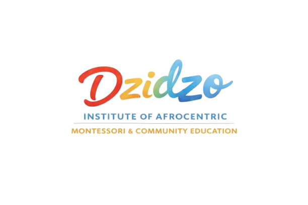
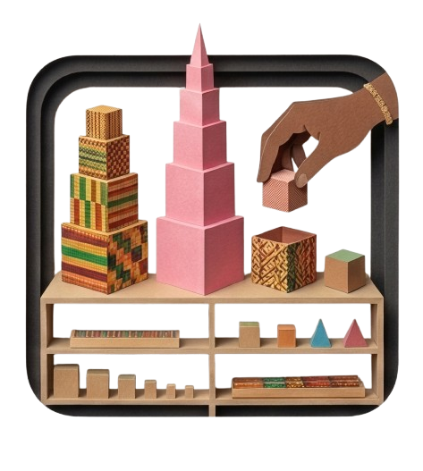
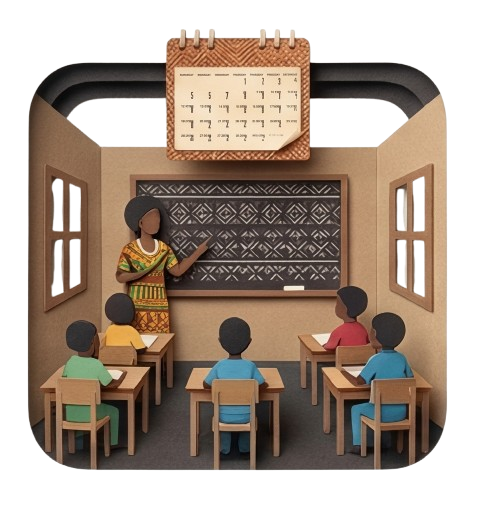
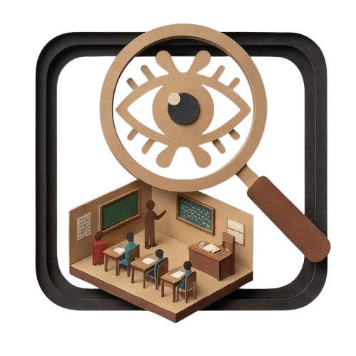
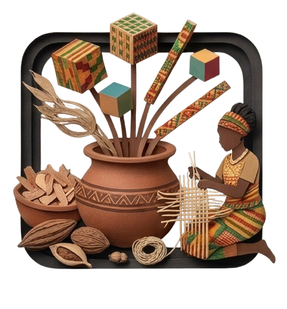
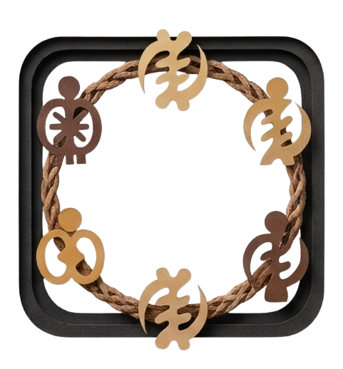
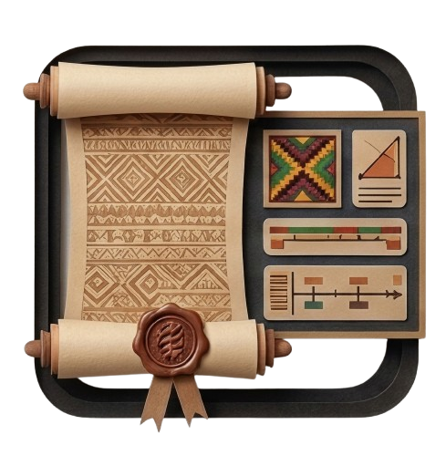

The 10-month training program is a comprehensive, practice-based professional diploma
designed for in-service teachers, school leaders, and community educators across Zimbabwe
and the African continent. This course prepares educators to implement Montessori education in
culturally grounded, multilingual, and low-resource environments while meeting national
curriculum standards.
The program blends Montessori philosophy, practical classroom application, African-centered
pedagogy, and community engagement. Participants move from theory to mastery through
workshops, supervised practice, classroom observation, material creation, and mentorship.

In-person or hybrid deep-dive sessions

Implementation within your own classroom

Structured observation and expert feedback

Making Montessori tools from local resources

Collaborative learning with fellow educators

Demonstrating mastery through portfolio and practice
Participants explore Montessori philosophy, planes of development, the prepared environment, observation, and the role of the adult. This module grounds Montessori principles in Ubuntu and African worldviews of community, dignity, and identity.
Educators learn how to design calm, structured, child-centered classrooms even in large class settings. Emphasis is placed on classroom flow, independence, grace and courtesy, conflict resolution, and inclusive practice.
Participants master presentations in care of self, care of environment, movement, coordination, and responsibility. Special attention is given to adapting Practical Life to local cultural practices and everyday materials.
This module develops understanding of the child’s refinement of the senses. Teachers learn to use and create sensorial materials that support classification, comparison, and abstraction.
Participants receive full training in phonemic awareness, sandpaper letters, moveable alphabet, grammar materials, and early writing and reading development. Strategies for integrating English, Shona, Ndebele, and local languages are included.
Training includes number sense, decimal system with Golden Beads, operations, fractions, and problem solving. Teachers learn how to guide children through hands-on exploration toward abstract thinking.
Geography, science, botany, zoology, history, and peace education are explored through culturally responsive storytelling and inquiry-based learning. This module encourages local research and integration of African heritage.
Teachers learn authentic Montessori assessment methods, record keeping, progress tracking, and alignment with national curriculum frameworks.
Participants are trained to recognize developmental differences and adapt environments for neurodivergent learners. Emphasis is placed on dignity, strengths-based support, and practical classroom strategies.
The final module focuses on parent partnership, community dialogue, professional ethics, leadership development, and building sustainable Montessori ecosystems within local communities.
Upon successful completion, participants receive a Professional Diploma in African Montessori & Community Education from the MoW Institute.
Throughout the 10 months, participants implement lessons in their classrooms while receiving structured feedback. The program culminates in a Capstone Portfolio, including:
Graduates of the program emerge as leaders capable of confidently delivering Montessori presentations across all core subject areas while skillfully adapting materials for low-resource settings. They possess the expertise to align Montessori practice with national curriculum standards, allowing them to lead child-centered classrooms grounded in dignity and independence. Ultimately, these educators serve as a bridge between the school and the home, engaging families and communities as vital partners in the educational journey.
This 10-month diploma is designed to strengthen teacher identity, elevate classroom practice, and build a movement of African Montessori educators who believe that better is possible.